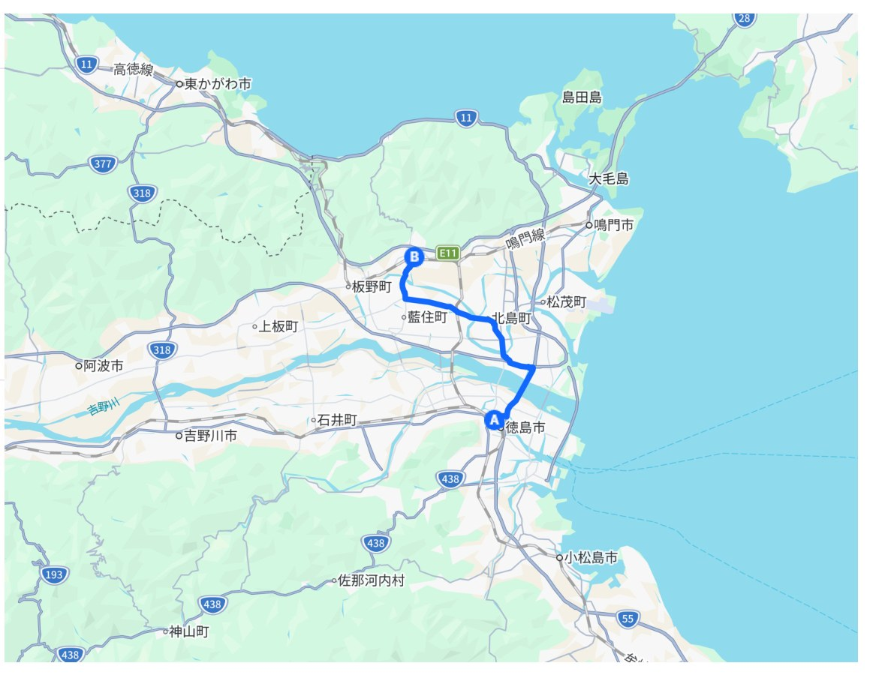

<!--meta
title: お遍路旅行記 第1回 第1日 — 〇〇 → 〇〇
kind: 旅行記
date: YYYY-MM-DD
pc1: 0.00
series: ohenro
dummy: false
deck: 〇〇から〇〇まで．
description: お遍路旅行記 第1回 第1日．〇〇から〇〇まで．壮大なる愚作より。
-->
<!--
    このsource.htmlは「お遍路旅行記」シリーズのテンプレートです．
    区切り打ち（複数回に分けて巡る）を想定し，「第N回 第M日」で日を
    管理します．1日＝1記事とし，このフォルダを丸ごと複製して，
    ohenro-r1d2（第1回2日目），ohenro-r2d1（第2回1日目）のように
    「r回数d日数」の形でslugをリネームして使ってください．シリーズとして
    連桁でつながるよう，series: ohenro は全回・全日で共通にしてあります．
    pc1もシリーズ内では揃えておくと，スコア譜上でひとまとまりに見えます
    （値は要調整）．
    タイトル・見出し・table中の項目・地図画像・写真は，すべて仮の値です．
    実際の内容に置き換えてから python tools/build.py を実行してください．

    執筆時は，お接待をしてくださった方・宿泊施設・他の遍路者など
    第三者への配慮を忘れないこと．詳しくは CLAUDE.md の
    「お遍路旅行記シリーズ執筆時の配慮事項」を参照．
-->
<table style="border-collapse:collapse;margin:0 0 24px;font-size:14px;color:var(--ink-soft);">
    <tr><td style="color:var(--ink-faint);width:100px;padding:3px 14px 3px 0;">区切り</td><td>第1回 第1日</td></tr>
    <tr><td style="color:var(--ink-faint);padding:3px 14px 3px 0;">日付</td><td>YYYY年M月D日</td></tr>
    <tr><td style="color:var(--ink-faint);padding:3px 14px 3px 0;">区間</td><td>〇〇 → 〇〇</td></tr>
    <tr><td style="color:var(--ink-faint);padding:3px 14px 3px 0;">歩行距離</td><td>約XX km</td></tr>
    <tr><td style="color:var(--ink-faint);padding:3px 14px 3px 0;">札所</td><td>第◯番 〇〇寺 ほか</td></tr>
</table>
<!-- 移動経路の地図．GPSアプリ等から書き出した画像を想定．
     ファイル名（map.jpg）は自由に変えてよい -->
<figure class="figure-full">
    
    <figcaption>移動経路（〇〇 → 〇〇，約XX km）</figcaption>
</figure>
<p>
    ここに経路の説明を書く．出発地・経由地・到着地，札所の位置関係，歩いた道の様子など．
</p>
<p>
    【日記】
</p>
<p>
    ここから日記本文．
</p>
<!-- 日記の途中に写真を挟みたいときは，この.galleryブロックを
     必要な回数だけ繰り返してください（1枚だけでも複数枚でも可） -->
<div class="gallery">
    <figure>
        
        <figcaption></figcaption>
    </figure>
    <figure>
        
        <figcaption></figcaption>
    </figure>
</div>
<p>
    日記本文のつづき．
</p>
